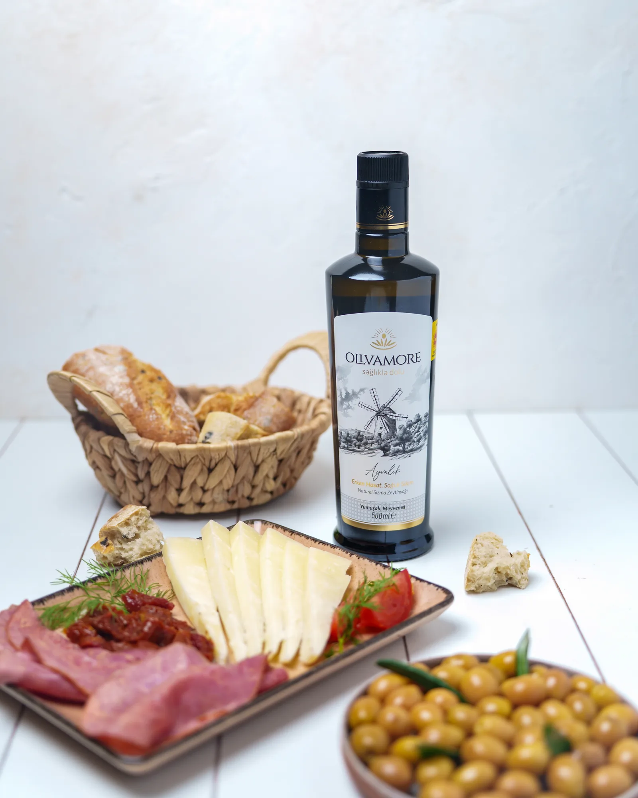

Ekim 2025 Hasadı · Ayvalık
Ayvalık Erken Hasat
Yumuşak, meyvemsi. Erken hasat, soğuk sıkım, naturel sızma zeytinyağı.
Ekim 2025 hasadı · Hasat pasaportlu · Ayvalık mı, Trilye mi? →
Domates–beyaz peynir salatasına serviste · Humusun üstüne · Kahvaltıda ekmeğin üstüne
Tek seferlik alımBir kez al, dene
₺850
Boyut
KDV dahil · ₺1.700 / litre · Türkiye içi teslimat
Ödeme: Havale / EFT. Kartla ödeme henüz sunulmuyor.
Bu ürünün hasat, çeşit ve parti bilgileri şişedeki kodla açılan Hasat Pasaportu'nda bir arada sunulur.
Tadım notları
Dene
| Hasat dönemi | Ekim 2025 |
| Çeşit | Ayvalık (Edremit) |
| Sofradaki rolü | Bitirme |
| Parti kaydı | Şişedeki kodla sorgula → |
Erken hasatta yağ verimi düşerken taze aroma hedefi öne çıkar. Ürünün koyu cam şişesi, parti takibi ve mevcut analizleri fiyatın yalnız hacimle değil, üretim ve şeffaflık sistemiyle kurulmasını sağlar.
Siparişler 1–2 iş günü içinde kargoya verilir. 500 TL üzerindeki siparişlerde kargo ücretsizdir. Açılmamış ürünleri 14 gün içinde koşulsuz olarak iade edebilirsin.
Işıktan ve ısıdan uzak, serin bir dolapta sakla. Koyu renkli şişe ışığa karşı koruma sağlar; yine de ürünü ocağın yanında tutma. Açıldıktan sonra 2–3 ay içinde tüketmeni öneririz.
PT
Olivamore üretim kaydı
Doğrulanmış köken ve parti bilgileri Hasat Pasaportu'nda.
Üreticiyi tanı →